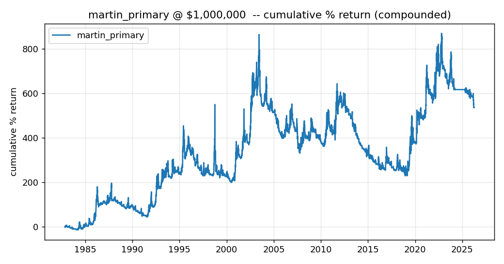
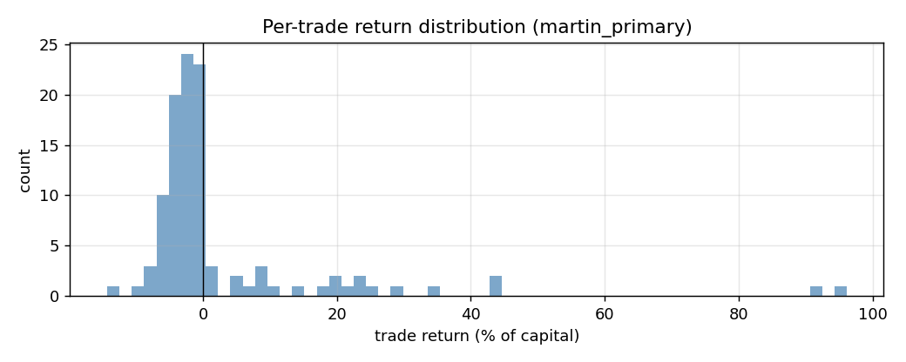

Headline Verification
PASSReconciliation within 5%|recon| = 0.6348%
PASSSharpe positive (no falsification, reporting only)sharpe_gross = 0.317
PASSPer-trade skew positive (Martin §2.3 sign check)skew_per_trade = 3.861
Summary Metrics
| instrument | instrument | capital_usd | start | end | n_days | ann_return_gross_pct | ann_return_net_pct | ann_vol_pct | sharpe_gross | sharpe_net | skew_daily | skew_per_trade | n_trades | median_trade_days | median_trade_return_pct | win_rate_pct | max_drawdown_pct_geom | ann_subsystem_turnover | reconciliation_diff_pct | frac_flat | mean_abs_pos | forecast_clip_frac | K_normalisation |
|---|
| martin_primary_ema2_us10 | US10 | 1,000,000 | 1982-11-09 | 2026-04-03 | 9,916 | 7.89 | 7.89 | 24.923 | 0.317 | 0.317 | -0.067 | 3.861 | 106 | 56 | -1.91 | 26.4 | -65.972 | 3.77 | 0.635 | 0 | 0.928 | 0 | 0.014 |
Equity Curves

Compounded % return on $1,000,000 capital
Literature: Martin (2023) Design and analysis of momentum trading strategies
Per-Trade Distribution

Per-trade (sign-episode) return distribution
Trade Statistics
| instrument | n_trades | median_days | median_return_pct | win_rate_pct | skew_per_trade |
|---|
| martin_primary_ema2_us10 | 106 | 56 | -1.91 | 26.4 | 3.861 |
Run Manifest
| spec | martin_primary_ema2_us10 |
| capital_usd | $1,000,000 |
| engine | standalone |
| vol_estimator | martin_20d_ema_of_sq |
| forecast_cap | None |
| roundpositions | 0 |
| instrument | US10 |
| pre_registration | ars/evidence_packs/execution_friction_us10/execution_friction_us10_preregistration.md |
| git_sha | 83e43dd64e17 |